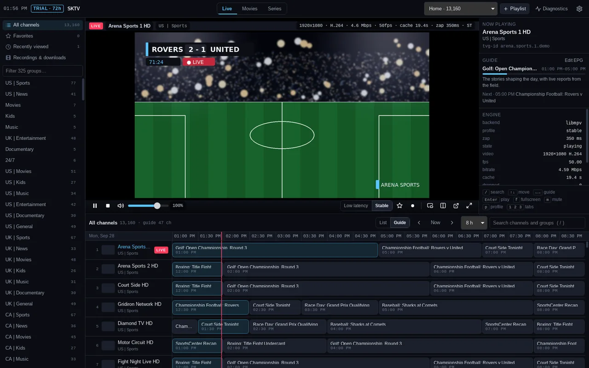
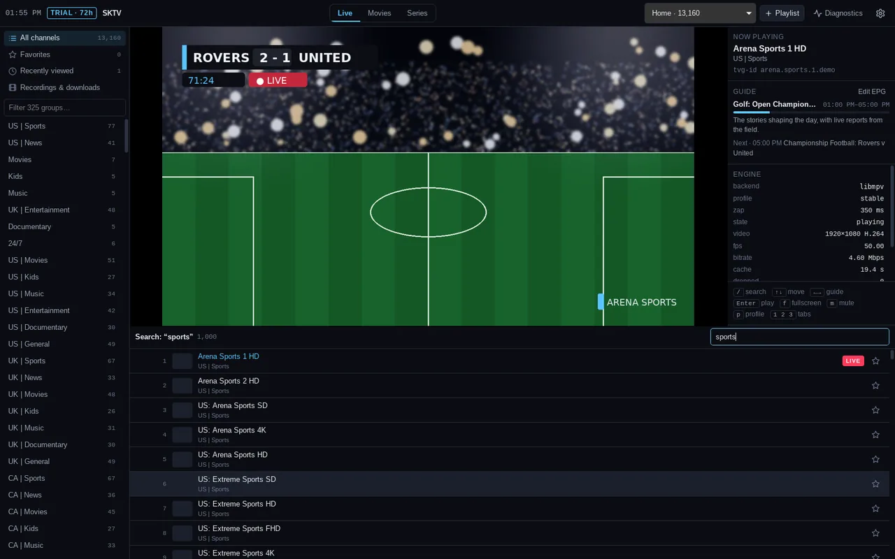

SKTV is a desktop player for the sources you already have — Xtream, M3U or Stalker. Native video, the full guide next to the picture, recording, downloads, and diagnostics that tell you the truth about buffering. Windows, macOS and Linux.

Most IPTV apps are a browser in a trench coat. SKTV is a native player with a real database behind it, so big playlists stay fast and video never goes through a web view.
Video is decoded and drawn by your GPU (D3D11 on Windows, VideoToolbox on Mac), not copied through a browser. One player instance stays warm, so channel changes take about a second.
The picture stays up while you scroll the full 7-day guide, search, or open a channel's Now / Next card. Double-click for fullscreen; the guide is one key away.
Playlists are indexed, not loaded into memory. Search across live TV, movies and series as you type, accents and all — pokemon finds Pokémon.
Low Latency keeps you close to live for sports; Stable soaks up a shaky connection. Switch any time. We don't promise zero delay, because nobody can.
Schedule recordings from the guide with an overrun for sports, download movies and episodes with resume, and pick up where you left off with auto-next.
An HTTP trace, a stream probe and a source check show whether it's the app, your network or the provider. Reports are redacted — passwords never leave your machine.
A floating mini player that keeps its size and spot, a second pane for a second channel, and a warning before you exceed your provider's connection limit.
PIN-lock groups, hide channels by keyword, hide the movie and series tabs, hide the chrome. Dark theme by default, with editable colour tokens.
No accounts, no analytics, no telemetry. Updates come from a signed manifest; your playlists and passwords stay in an encrypted local database.

A 40,000-channel list opens in a second and scrolls at 60 fps because SKTV streams your playlist into a local database instead of holding it in memory. Search covers channels, movies and series at once, and the guide imports in the background — you can start watching before it finishes.
Favorites, recently viewed, folders and group filters live in a rail on the left; everything else is a keystroke away.
When a stream stutters, SKTV can tell you why. The built-in diagnostics trace every request, probe the stream with an isolated player, and check the source — then give you a one-click, redacted report you can send to your provider.
SKTV is a player. It ships with no channels and no playlists — you connect the service you already pay for, in whichever format it gives you.
The richest option: categories, posters, EPG and series come straight from the panel. Use it if your provider offers it.
A playlist link or file. Works with almost everything; pair it with an XMLTV guide link for programme data.
Portal URL plus a MAC address. Supported for live TV; marked experimental.
Free to download. Installed copies check for updates on start and install them in place.